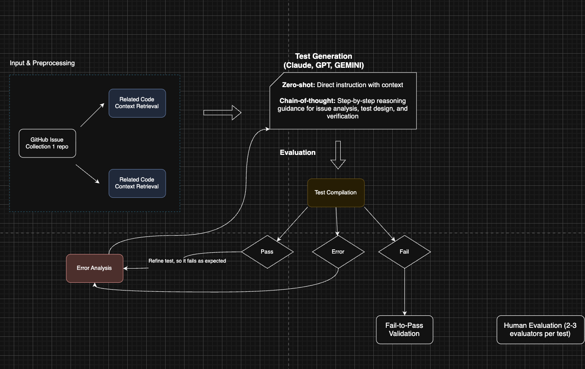

This project explores how large language models can assist in generating structured JUnit test cases from real software development artifacts. It has moved beyond early planning and now focuses on collecting GitHub issues, identifying useful issue–pull request relationships, and using that data as the basis for test generation.
The goal is to create a workflow where issue data from real repositories is transformed into structured test-generation inputs, then passed through an LLM-assisted process to produce test cases or test schemas that can be evaluated and refined.

The project began with a research phase reviewing prior work in automated test generation, machine learning in software testing, and issue-based software artifacts. This helped define the gap: most prior approaches focus on test prioritization, defect prediction, or generation from source code, while this work focuses on issue-level information and linked development artifacts.
The workflow then moved into data collection, focusing on GitHub issues and whether they had associated pull requests. Issue–PR links provide stronger evidence that an issue describes concrete behavior that was implemented or fixed.
Current pipeline focus:
A major challenge is identifying which GitHub issues are actually useful for testing purposes. Many issues are noisy, incomplete, or not tied to concrete behavior. To address this, the project filters issues and checks for linked pull requests where possible.
Another challenge is that generated outputs may not compile or align with project structure. The workflow includes error analysis and iterative refinement rather than assuming generation succeeds on the first attempt.
As the project progressed, early ideas were revised to keep the methodology realistic and aligned with available data and evaluation time.
This project demonstrates research-driven software engineering, data pipeline design, GitHub data collection, and practical application of LLMs to software testing workflows. It is one of my strongest academic and technical projects because it combines research, implementation planning, and real software repository analysis.